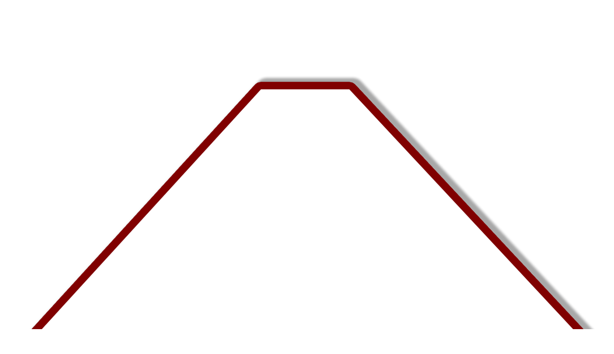
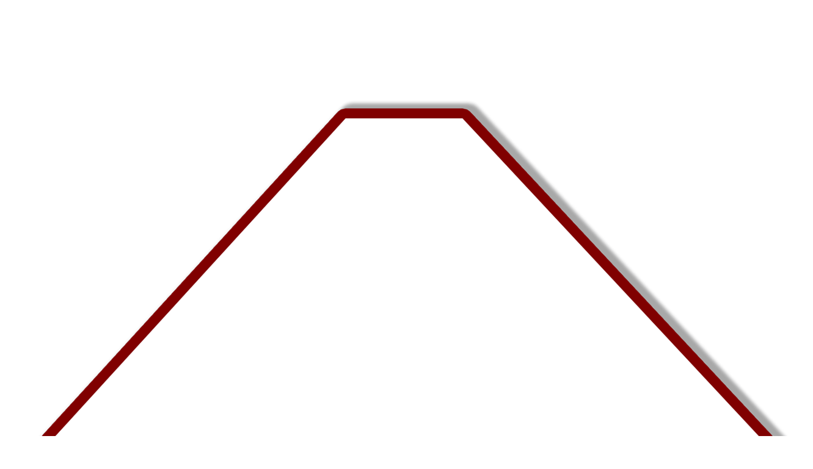

I believe that, whatever design problem you need to solve, you should face it with rationality, logic and careful analysis if you want to get to the right idea.
Graphic design is always a synthetic work: you need to reduce and remove until you reach the core of the message. When you work with typography and lettering, the essential goal is to obtain the best possible legibility.
To achieve this result, it is fundamental to know typography and its history. The computer has become an essential tool but its undisputed utility and versatility cannot replace knowledge. As extraordinary as this instrument can be, you need deep roots and the ability to express yourself even with the simplest tools—such as a pencil—in order to use it correctly.
It clarifies the product’s structure. Better still, it can make the product talk. At best, it is self-explanatory.
A good software does not necessarily create good graphics.
Graphics is not an independent art, but a service. To obtain a correct result, you need to put yourself on the side of the observer, on the side of the public.
It avoids being fashionable and therefore never appears antiquated. Unlike fashionable design, it lasts many years – even in today’s throwaway society.
A good designer is the one who offers a good service through communication, not the one who wants to surprise at any cost, neither the one who wants to show how good he is.
A designer is good if he can solve a problem, if he puts forward a useful solution.
I believe that these rules could be a good start for a career in design.
 
